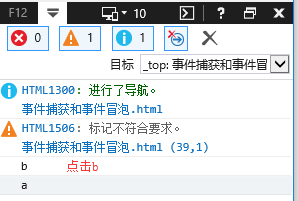

JS事件捕获和事件冒泡
- 捕获事件：通俗的理解就是，当鼠标点击或者触发DOM事件的时候，浏览器会从根节点（document）开始，由外到内进行事件传播，知道事件源，即点击子元素，如果父元素通过事件捕获方式绑定了对应的事件的话，会先触发父元素绑定的事件。（
IE10及以下版本不支持）- 冒泡事件：与事件捕获相反，事件冒泡顺序是从内（事件源）到外进行事件传播，直到根节点（document）。
| DOM Level | 捕获事件 | 冒泡事件 |
| DOM Level 0 | 不支持 | 支持 |
| DOM Level 2 | 支持 | 支持 |
| DOM Level 3 | 支持 | 支持 |
- DOM 0级事件不支持捕获事件，而且，在DOM 0事件中，一个元素只能绑定一个事件，若绑定了多个事件，最后一个事件会把前边的事件覆盖掉。
- DOM 2级事件支持捕获事件和冒泡事件，而且，一个元素可以绑定多个事件。
addEventListener(event,listener,useCapture)
event：事件名称，如click，不带 ‘ on ’ ；listener：事件监听函数，即对应事件触发时执行的函数；useCapture：‘ true ’ 为采用冒泡事件，‘ flase ’为采用捕捉事件，默认为‘ false ’。
1.<style>
2. #a{
3. width:200px;
4. height:200px;
5. margin:50px auto;
6. overflow:hidden;
7. border-radius:10px;
8. cursor:pointer;
9. background:#00ae66;
10. }
11. #b{
12. width:100px;
13. height:100px;
14. background:#0aeeaa;
15. margin:50px;
16. border-radius:10px;
17. cursor:pointer;
18. }
19.</style>
20.<body>
21. <div id='a'>
22. <div id='b'></div>
23. </div>
24.</body>
捕获事件：
1. var a=document.getElementById('a'),
2. b=document.getElementById('b'),
3. body=document.body;
4. a.addEventListener('click',function(){
5. console.log('a捕获');
6. },true);
7. b.addEventListener('click',function(){
8. console.log('b捕获');
9. },true);
10. body.addEventListener('click',function(){
11. console.log('body捕获');
12. },true);

冒泡事件：
1. a.addEventListener('click',function(){
2. console.log('a冒泡');
3. },false);
4. b.addEventListener('click',function(){
5. console.log('b冒泡');
6. },false);
7. body.addEventListener('click',function(){
8. console.log('body冒泡');
9. },false);
捕获事件和冒泡事件同时存在时：
1. a.addEventListener('click',function(){
2. console.log('a捕获');
3. },false);
4. b.addEventListener('click',function(){
5. console.log('b捕获');
6. },false);
7. body.addEventListener('click',function(){
8. console.log('body捕获');
9. },false);
10. a.addEventListener('click',function(){
11. console.log('a冒泡');
12. },true);
13. b.addEventListener('click',function(){
14. console.log('b冒泡');
15. },true);
16. body.addEventListener('click',function(){
17. console.log('body冒泡');
18. },true);
绑定多个事件：
1. a.addEventListener('click',function(){
2. console.log('a冒泡');
3. },false);
4. b.addEventListener('click',function(){
5. console.log('b冒泡');
6. },false);
7. body.addEventListener('click',function(){
8. console.log('body冒泡');
9. },false);
10. a.addEventListener('click',function(){
11. console.log('a冒泡2');
12. },false);
13. b.addEventListener('click',function(){
14. console.log('b冒泡2');
15. },false);
16. body.addEventListener('click',function(){
17. console.log('body冒泡2');
18. },false);
1. a.addEventListener('click',function(){
2. console.log('a捕获');
3. },false);
4. b.addEventListener('click',function(){
5. console.log('b捕获');
6. },false);
7. body.addEventListener('click',function(){
8. console.log('body捕获');
9. },false);
10. a.addEventListener('click',function(){
11. console.log('a捕获2');
12. },false);
13. b.addEventListener('click',function(){
14. console.log('b捕获2');
15. },false);
16. body.addEventListener('click',function(){
17. console.log('body捕获2');
18. },false);
attachEvent(event,listener)
event：事件名称，如 ‘ onclick ’，带 ‘ on ’；listener：事件监听函数，即事件发生时执行的函数；- 主要用于IE10及一下的浏览器；
- 绑定多个事件时不会出现后面的事件覆盖前面的事件的现象
1.a.attachEvent('onclick',function(){
2. console.log('a');
3.})
在IE11中：
在非IE浏览器中：
在IE10中：
stopPropagation：停止冒泡事件或捕获事件（IE中不支持）
1. a.addEventListener('click',function(e){
2. console.log('a冒泡');
3. e.stopPropagation();
4. },false);
5. b.addEventListener('click',function(e){
6. console.log('b冒泡');
7. },false);
8. body.addEventListener('click',function(e){
9. console.log('body冒泡');
10. },false);
1. a.addEventListener('click',function(e){
2. console.log('a捕获');
3. e.stopPropagation();
4. },true);
5. b.addEventListener('click',function(e){
6. console.log('b捕获');
7. },true);
8. body.addEventListener('click',function(e){
9. console.log('body捕获');
10. },true);
cancelBubble：阻止冒泡，兼容IE和标准浏览器
1.a.attachEvent('onclick',function(e){
2. console.log('a');
3. e.cancelBubble=true;
4.});
5.b.attachEvent('onclick',function(){
6. console.log('b');
7.});
8.body.attachEvent('onclick',function(){
9. console.log('body');
10.});

detachEvent：移除attachEvent绑定的事件：
1. a.addEventListener('click',function fn(e){
2. console.log('a冒泡');
3. a.detachEvent('onclick',fn);
4. },false);
5. b.addEventListener('click',function(e){
6. console.log('b冒泡');
7. },false);
8. body.addEventListener('click',function(e){
9. console.log('body冒泡');
10. },false);
removeEventListener：移除addEventListener绑定的事件：
1. a.addEventListener('click',function fn(e){
2. console.log('a捕获');
3. a.removeEventListener('click',fn);
4. },true);
5. b.addEventListener('click',function(e){
6. console.log('b捕获');
7. },true);
8. body.addEventListener('click',function(e){
9. console.log('body捕获');
10. },true);
移除函数只能移除有名字的函数，不能移除匿名函数！！！